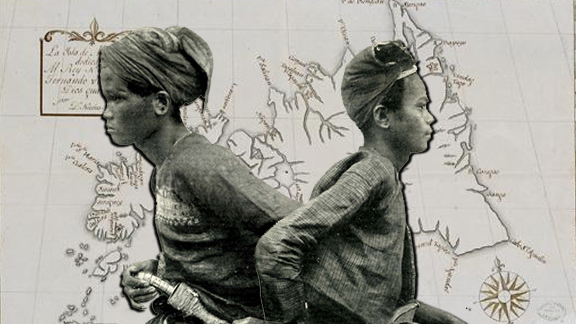
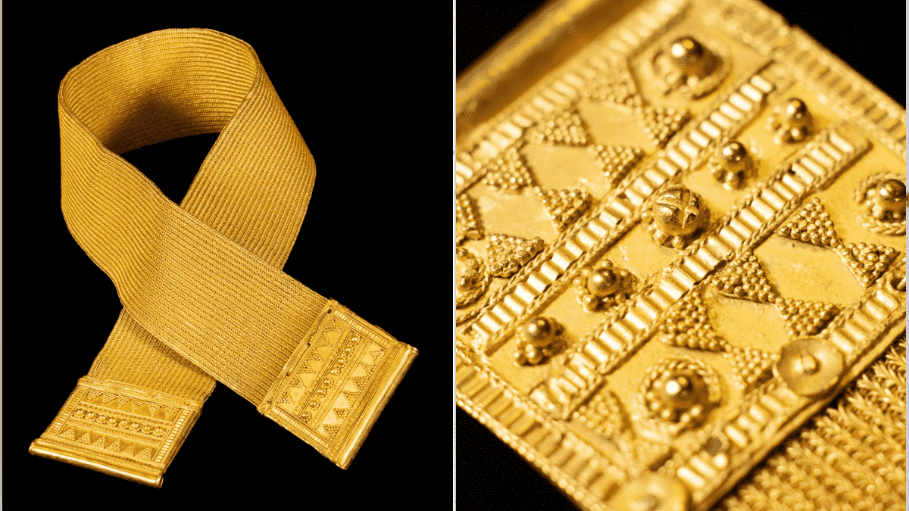
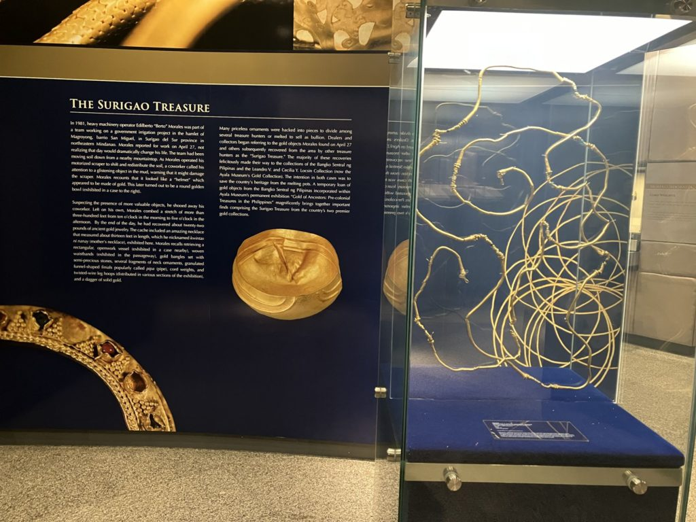

Pre-colonial history of the Surigaonon people
Pre-colonial Surigao del Sur was a sophisticated, gold-rich society (10th–13th centuries) deeply connected to Southeast Asian trade networks. The 1981 discovery of the "Surigao Treasure" in Magroyong, San Miguel, revealed high-karat gold jewelry, ceremonials (e.g., kinnari), and tools, proving a highly developed culture with Hindu-Buddhist influences.



